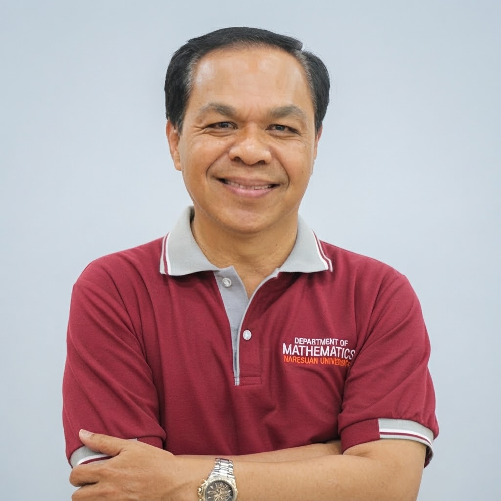

Honoring his lifelong academic contributions, leadership, and dedication to the field of Applied Nonlinear Analysis.
The 5th International Conference and Workshop on Applied Nonlinear Analysis (ICWANA2027) aims to bring together leading experts, researchers, and young scholars in the field of nonlinear analysis, with a particular focus on fixed point theory, variational inequalities, optimization, and their applications.
Our goal is to explore and evaluate the latest developments, innovative ideas, and advanced methodologies in this vital and dynamic field. Special attention will be given to applications in related areas, including the natural sciences, medicine, data science, economics, and engineering.
The inaugural workshop setting the foundation for our international research network.
Expanding collaboration across Asia and Europe in applied nonlinear analysis.
Building momentum with hybrid participation and emerging optimization themes.
Transitioned to a full International Conference & Workshop (August 6–8, 2024).
July 28–31, 2027 | Featuring RISE 5.0 x Erasmus+ EU Meeting.